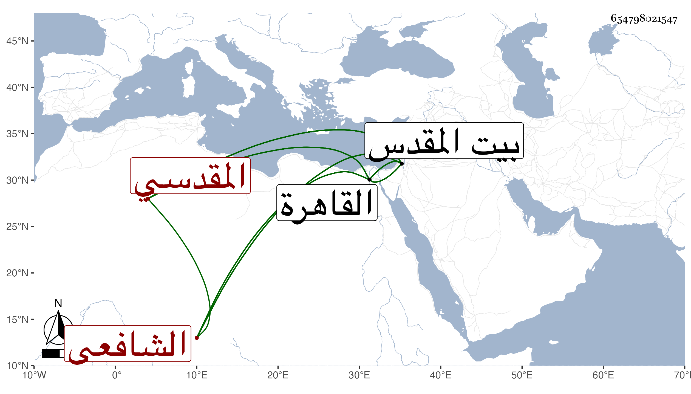

0902Sakhawi.DawLamic.ITO20230111-ara1.EIS1600.654798021547
Biography ID: 654798021547
458
محمد بن أبي بكر بن محمد بن علي بن أحمد بن داود التاج أبو الوفا ابن التقي بن التاج البدري المقدسي الشافعي أخو أحمد الماضي والآتي أبوهما ويعرف كسلفه بابن أبي الوفا . ولد سنة إحدى وأربعين وثمانمائة ببيت المقدس وخلف أباه في المشيخة ببيت المقدس فصار شيخ الزاوية الوفائية والمدرسة الحسنية بعد إقامته بالقاهرة مدة أخذ فيها عن المناوي وأذن له فيما بلغني وكذا قدم القاهرة غير مرة وتزوج ابنة البدر العيني واستولدها ، ولا يخلو من مشاركة في الجملة مع كياسة ونظم بل وتصنيف في التصوف ، وقد سمع معنا ببيت المقدس على أبيه والتقي القلقشندي وغيرهما وتكرر اجتماعه معي بالقاهرة . مات برملة لد في يوم الاثنين تاسع أو عاشر المحرم سنة إحدى وتسعين وحمل إلى القدس فدفن في أواخر اليوم الذي يليه عند أبيه بماملا رحمه الله ووصفه الصلاح الجعبري بالشيخ الإمام العالم .
